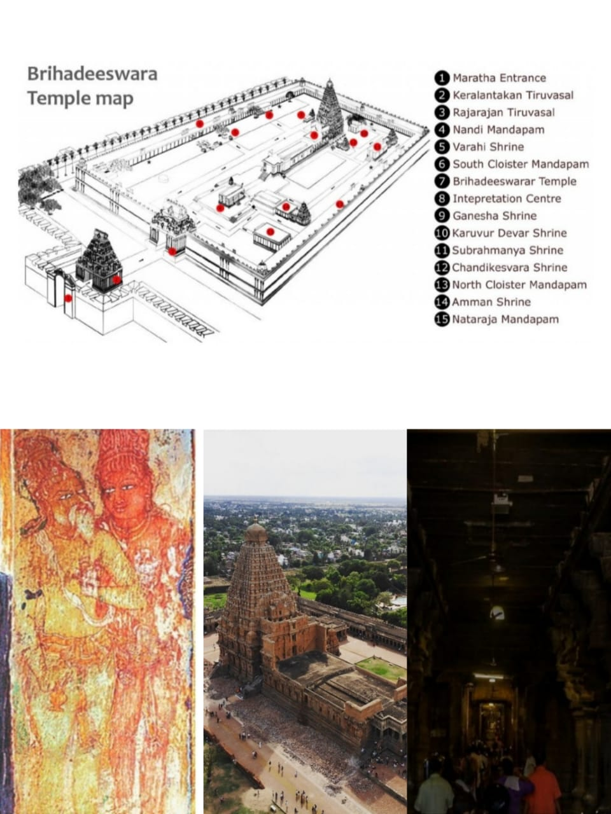

WONDERS OF INDIA : The Big Temple
Last Updated: May 16, 2023
Amongst the brightly lit, sunny landscapes of South India, stands the mighty 'Rajarajaswaram kovil' or 'The Brihadeeswara temple' reflecting the rich Dravidian architecture throughout its stone sculpted faces. 'Thanjai periya kovil' which is 'huge' just as the name suggests, is the centripetal energy core that captivates the eye from almost every visual point around the fabric of Tanjore. All the energy finds its concentration in the deep black stone 'lingam' of Lord Shiva and reverberates around the dense monotonous stone walls of the 'karuvarai'(garbagriha). The 3.1m tall lingam is humbly nestled deep inside the huge 'mandapam' and the long enclosed 'artha-mandapam' whose linearity and distance create the energy vibration inside.
Dating back to the times of the 'Chola' reign, King Rajaraja Cholan 1 is believed to have a rich flourishing empire over a huge population with its centre at Thanjavur, around Kaveri river delta region. The reign saw a series of rich culture and artistic experiences ranging from Literature to Music and Dance. The construction of the temple is believed to have been a celebration in which people from various places around gathered at Thanjavur and became a part, right from the religious inscription & sculpting to the construction & manpower. During the several years of construction, the entire population was sufficed with food & shelter, and many cultural events involving music & dance were held. This altogether made the emergence of 'Thanjai periya kovil' a lively celebration. These are reflected on the carefully-chiseled stone walls within the fortified complex, where the names of all the people involved have been carved and made its way into history. Even today, the cloister halls around the courtyard that accomodate the historical records in the gallery hymn to the ancient glory of the entire 'CHOLA NADU'(Chola region).
The Brihadeeswara temple stands as a masterpiece of Dravidian Architecture not only with the Rich Rigid architectural surfaces but with the passionate effort and touch of the Spartans that are infused with the stones & sculptures. Amidst invasion by various empires, the strong monotonous stone surfaces still reflect the colorful lives of the past and make way to the present with its functioning temple that makes it one of the "Greatest Living Chola Temples".